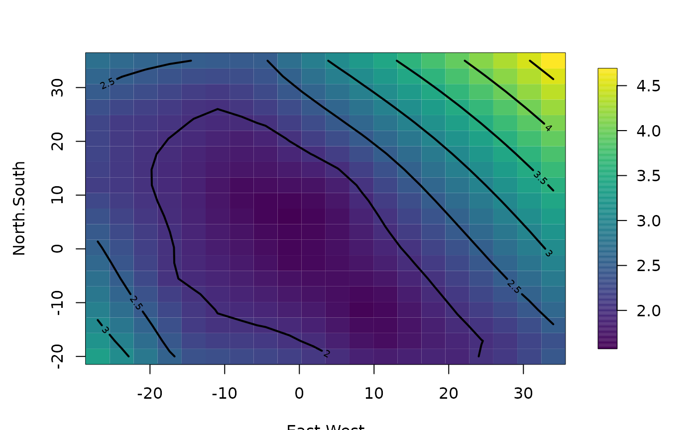

predictSE.Krig.RdFinds the standard error ( or covariance) of prediction based on a linear combination of the observed data. The linear combination is usually the "Best Linear Unbiased Estimate" (BLUE) found from the Kriging equations. This statistical computation is done under the assumption that the covariance function is known.
predictSE(object, ...)
# S3 method for Krig
predictSE(object, x = NULL, cov = FALSE, verbose = FALSE,...)
# S3 method for mKrig
predictSE(object, xnew = NULL, Z = NULL, verbose = FALSE, drop.Z
= FALSE, ...)If FALSE find standard error without including the additional spatial covariates
described by Z. If TRUE find full standard error with spatial covariates if they are part of the model.
A fitted object that can be used to find prediction standard errors. This is usually from fitting a spatial model to data. e.g. a Krig or mKrig object.
Points to compute the predict standard error or the prediction cross covariance matrix.
Same as xnew -- points to compute the predict standard error or the prediction
cross covariance matrix.
If TRUE the full covariance matrix for the predicted values is returned. Make sure this will not be big if this option is used. ( e.g. 50X50 grid will return a matrix that is 2500X2500!) If FALSE just the marginal standard deviations of the predicted values are returned. Default is FALSE -- of course.
If TRUE will print out various information for debugging.
These additional arguments passed to the predictSE function.
Additional matrix of spatial covariates used for prediction. These are used to determine the additional covariance contributed in teh fixed part of the model.
A vector of standard errors for the predicted values of the Kriging fit.
The predictions are represented as a linear combination of the dependent variable, Y. Call this LY. Based on this representation the conditional variance is the same as the expected value of (P(x) + Z(X) - LY)**2. where P(x)+Z(x) is the value of the surface at x and LY is the linear combination that estimates this point. Finding this expected value is straight forward given the unbiasedness of LY for P(x) and the covariance for Z and Y.
In these calculations it is assumed that the covariance parameters are fixed. This is an approximation since in most cases they have been estimated from the data. It should also be noted that if one assumes a Gaussian field and known parameters in the covariance, the usual Kriging estimate is the conditional mean of the field given the data. This function finds the conditional standard deviations (or full covariance matrix) of the fields given the data.
There are two useful extensions supported by this function. Adding the
variance to the estimate of the spatial mean if this is a correlation
model. (See help file for Krig) and calculating the variances under
covariance misspecification. The function predictSE.KrigA uses
the smoother matrix ( A(lambda) ) to find the standard errors or
covariances directly from the linear combination of the spatial
predictor. Currently this is also the calculation in
predictSE.Krig although a shortcut is used
predictSE.mKrig for mKrig objects.
Krig, predict.Krig, predictSurfaceSE
#
# Note: in these examples predictSE will default to predictSE.Krig using
# a Krig object
fit<- Krig(ChicagoO3$x,ChicagoO3$y,cov.function="Exp.cov", aRange=10) # Krig fit
predictSE.Krig(fit) # std errors of predictions at obs.
#> [1] 1.605075 1.625888 1.582081 1.717259 1.553386 2.037997 1.588340 1.624983
#> [9] 1.753248 1.970771 2.139202 1.804267 2.430791 2.011470 2.115035 2.388593
#> [17] 1.871492 1.662702 2.323701 2.039209
# make a grid of X's
xg<-make.surface.grid(
list(East.West=seq(-27,34,,20),North.South=seq(-20,35,,20)))
out<- predictSE(fit,xg) # std errors of predictions
#at the grid points out is a vector of length 400
#reshape the grid points into a 20X20 matrix etc.
out.p<-as.surface( xg, out)
surface( out.p, type="C")

# this is equivalent to the single step function
# (but default is not to extrapolation beyond data
# out<- predictSurfaceSE( fit)
# image.plot( out)